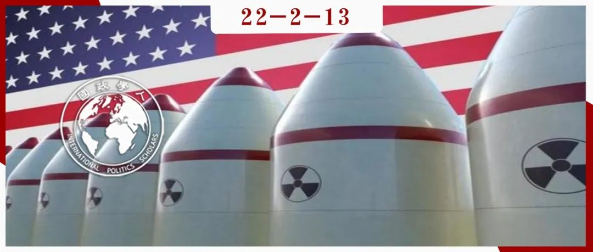
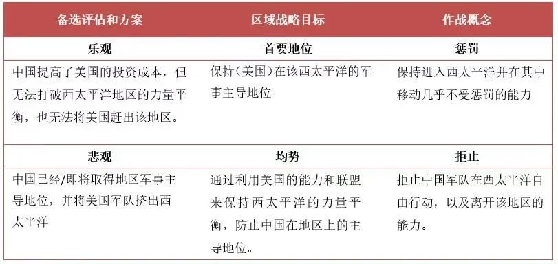

收录于合集

作品简介 ****
作者： Luis Simón，欧洲研究所教授，埃尔卡诺皇家研究所布鲁塞尔办公室主任，约翰霍普金斯大学高级国际研究学院访问研究员，皇家联合研究所和波罗的海防务学院副研究员。
编译： 张曼娜（南京大学国际关系研究院硕士研究生）
来源： Luis Simón (2020): Between punishment and denial: Uncertainty, flexibility, and U.S. military strategy toward China, Contemporary Security Policy , DOI: 10.1080/13523260.2020.1713604

导读
本文是一篇军事战略研究文章，文章主要关注在中国区域能力不断增长的情况下，美国如何有效运用惩罚与拒止两种军事威慑战略，防止自身在西太平洋地区的利益受到挑战。作者首先对有关两种威慑手段的文献进行了回顾与分析，结合对美国方面目前的相关实践进行考察后认为，美国正在将自己的大部分资源用于支持惩罚，同时积极鼓励和支持其区域盟友拒止中国西太平洋地区主导地位的努力。
本文主旨明确，将当前热门的中美竞争研究主题聚焦于军事领域，将地区限定在西太平洋，关注美国在惩罚与拒止两种军事威慑手段之间的战略抉择，并对二者的实施条件、特点、协同作用进行了透彻而全面的分析。文章主要的研究逻辑是：在中美战略竞争中，对手的意图、能力以及二者在未来可能如何演变的不确定性，有利于采取灵活的战略和威慑方法。在惩罚与拒止战略之间的权衡取决于对中国的能力以及不断演变的中美地区军事平衡的评估，简单而言，乐观的评估会导致采取惩罚战略，悲观的评估会导致采取拒止战略。而华盛顿目前采取的对华军事战略是：自身侧重于惩罚威慑，同时积极支持其区域盟友对中国的拒止战略。
本文在行文上十分通畅，第一部分对文章的基本逻辑进行了阐述，第二部分分别阐述了两种威慑手段的特点、区别以及协同作用，第三部分对现实应用进行了观察与分析，在理论上为相关的研究提供了一个很好的研究框架，在实践中也能帮助相关研究者更好地理解美国在西太平洋的对华军事战略。文章止于对现状的理解，然而美国对此种军事威慑战略的具体实施方法以及如何实现最大限度地发挥惩罚与拒止威慑的协同作用等问题，还有待进一步探究。
摘要
关于美国在西太平洋军事战略的大多数辩论围绕着如何威慑中国的问题展开。通过惩罚进行威慑的倡导者认为，美国可以利用其全球军事技术优势来保持地区军事主导地位。那些支持通过拒止来进行威慑的人指出了中国的潜力和“本土优势”，并认为美国应该满足于更温和的目标。本文认为，中国能力的高度不确定性和不断演变的中美地区军事平衡，致使美国采取了灵活的战略，并采用了不同的，甚至是相互矛盾的作战概念来威慑北京：美国本身主要侧重于惩罚威慑，同时积极鼓励并使其区域盟友通过拒止来形成威慑。
编译
在中国地区能力愈发增长的背景下，美国如何防止其在西太平洋的利益被挑战对于专家与决策者愈发重要。现有的文献中主要有两种威慑方法：惩罚（punishment）与拒止（denial），采取何种威慑方式不仅取决于对中国军事能力与规模的评估，还取决于与此相关的一系列经济、技术、政治方面的连带影响，然而这些都具有高度的不确定性。
尽管惩罚与拒止可能存在协同效应，但在实施这些措施所需的能力、各自赋予美国区域盟友的角色以及对态势升级的重视程度方面，都需要决策者在二者之间进行重要的权衡。惩罚优先考虑可以直接打击中国本土的远程空中和海上打击能力；拒止强调分散而有弹性的地区军事行动的价值。在惩罚背景下，盟友并不重要；在“积极拒止”背景下，盟友则至关重要。惩罚往往会带来更高的升级风险；拒止往往会避免升级。
作者在对华盛顿的相关实践进行考察后认为， 美国正在将自己的大部分资源用于支持惩罚，同时积极鼓励和支持其区域盟友拒止中国在西太平洋地区占据主导地位的努力。 本文第一部分讨论了不确定性、战略和灵活性之间的关系。第二部分探讨了灵活性如何帮助我们更好地理解美国在西太平洋的威慑方法。结论指出了本文的一些局限性和政策含义，并指出了进一步研究的可能途径。
01
不确定性、灵活性和战略
威慑旨在防止对手使用武力改变现状。惩罚威慑的重点在于大大增加攻击成本，通常由对其对手享有全球范围内事态升级主导权的大国来实施。拒止威慑的重点是通过降低某一行动的可行性以剥夺对手实现其目标的信心。对较弱的一方而言，拒止是一种必然的选择，因为较弱一方往往认为自己承受不起事态升级后的失败。
惩罚与拒止之间有三个重要的区别。第一点是主要功能的区别：拒止主要是增加敌人行动的直接成本。第二点是战区的区别：拒止是在自己的领土或势力范围内，而惩罚是在敌人的地盘上。第三，拒止意味着向对手传达敌对行动将限于其首选行动区域；而惩罚意味着向对手发出无法控制的事件的信号。
作者认为，在中美战略竞争中，对手的意图、能力以及二者在未来可能如何演变的不确定性，有利于采取灵活的战略和威慑方法。关于如何确定对手的意图，安全研究的相关文献表明，意图，或者说大国对对手意图的感知往往会受到自身的偏见、对手的欺骗以及对手的能力等因素的影响。那么如何评估对手的能力呢？作者认为应当将军事系统与其他能力放置在更广泛战略的背景下进行分析。尽管美国政府与专家学界预设中国打算实现地区霸权，但在中国使用武力的意图、中国的能力与不断演变的地区军事平衡存在很大的不确定性的背景下，美国应该采取什么样的战略来威慑中国呢？
02
灵活性的承诺
国际关系学者普遍认为，不确定的国际环境迫使各国采取灵活的战略方针。在本文中，灵活性被认为是对战略不确定性的理性反应，即国家采取看似矛盾的行为模式（作战概念）的能力。在美国关于如何对中国进行威慑的辩论中，这一尴尬处境引起了学界的强烈共鸣。
对中国的能力以及不断演变的中美地区军事平衡的乐观与悲观评估导致了美国应对中国的两种备选战略：雄心勃勃（惩罚）与小心翼翼（拒止）。乐观的情况是：美国享有一些结构性地缘政治、技术或军事战略优势，且这些优势将持续下去。悲观的情况是：中国的规模、经济、技术或军事潜力使得其即将成为地区霸权，甚至将有能力将美国挤出西太平洋。
对于两种情况出现的可能性、后果、应对方式等问题，我们都无法给出一个非黑即白的答案。作者认为，对于中国能力的高度不确定性意味着，美国无法合理地判断阻止其在西太平洋的利益受到威胁的最佳方式是什么，在这一背景下，惩罚与拒止方法的共存是有意义的。
作者接下来指出：保持开放和灵活的思维比保持灵活的策略容易得多。战略灵活性是一种妥协，它可能有助于一个国家对冲不确定性，在面临多个威胁时保持相对的能力，但它不会让该国处于单独应对任何这些威胁的最佳位置，所以关键在于一国如何确定资源的优先顺序。鉴于专注与灵活性各有优劣，各国通常会努力在二者之间取得适当的平衡，为此应当与其他国家合作。
03
理解美国在西太平洋的战略
对中国的军事实力及其可能的演变进行评估受到两组因素的限制。第一组因素是中国相对于美国拥有明显的军事技术优势、高度成熟的区域联盟基础设施、优越的常规以及核能力，从而使其拥有升级优势（escalation dominance）的假设；第二组因素是中国快速的技术和军事现代化、其在西太平洋的“本土优势”及其在A2/AD（Anti-Access/Area Denial，反介入/区域拒止战略）方面的进步对美国在该地区的战略地位构成了严重挑战。
中国崛起性质的高度不确定性意味着对中国能力以及不断演变的地区军事平衡的乐观和悲观评估并存，这导致了美国采取灵活军事战略——惩罚与拒止作战概念并存。这一战略并没有解决优先顺序的问题，然而，仔细观察当前关于哪些军事战略更适合应对中国能力的增长的讨论，有助于我们更好地了解美国战略的演变，以及惩罚与拒止的优先性适用的情境与方式。
04
**从首要地位v.s.平衡到惩罚与拒止
**
从威慑的角度来看，美国西太平洋军事战略的主要目的是防止中国挑战美国的地区利益，作战概念（CONOPS）主要有惩罚与拒止两种。以惩罚为导向的概念认为，保持美国将军事力量投射到西太平洋并在该地区内行动自由的能力，对区域盟友和美国自身的安全至关重要，中国的A2/AD能力应该被摧毁或降级。以拒止为导向的概念基于这样一种假设：美国应当接受中国A2/AD能力的事实并制定更现实的军事战略目标，其目的不是保持西太平洋地区的行动自由，而是拒止中国获得这些能力（表1）。
具体而言，惩罚威慑的例子包括海空作战（ASB）、美军对解放军作战网络实施的“致盲行动”等，但这将需要对中国领土进行直接打击，并可能导致美中之间的全面战争，到时美国空军与海军将是“箭在弦上，不得不发”，这也导致一些观察家以“过于冒犯”的理由否定了惩罚威慑。拒止威慑是指美国通过实施A2/AD，以期对中国实施远程封锁，一个典型的例子是离岸控制（Offshore Control），这一概念旨在最大限度地降低与中国的核冲突升级的可能性，且能够利用美国的竞争优势，将冲突转移到一个有利于使用“以己之长，攻彼之短”战术的地缘环境中。
表1 美国在西太平洋的战略和地区威慑

拒止威慑吸引着美国的区域盟友与合作伙伴。一方面，美国的区域盟友和伙伴没有资源投资惩罚所需的能力和技术；另一方面，出于政治和控制局势升级的原因，美国的区域盟友可能会倾向于采用拒止威慑。
惩罚与拒止之间的协同作用在于它们所需的能力、军力态势或联盟等方面。即使是旨在应对西太平洋的A2/AD挑战的最温和的作战概念，也需要前沿军事存在和地区联盟。然而，二者之间也存在权衡。惩罚威慑强调基于战区之外的远程空中和海上打击条件；拒止威慑强调战区内中短程导弹和平台使中国军事行动复杂化的潜力，以及可能增加中国潜在军事入侵和占领成本的不对称作战能力。惩罚威慑中，区域基地和盟友的作用相当被动和支持性；拒止威慑需要广泛利用地区基地，以及区域盟友和合作伙伴的积极参与。惩罚威慑支持者认为，除非美国表明其有能力击败并以军事手段惩罚中国，否则事态将不会升级，甚至他们认为美国在升级方面的主导地位加强了威慑；拒止威慑支持者更加重视遏制与中国的任何可能冲突的必要性，并警告升级为全面常规，甚至核战争的危险。
在这一部分的最后，作者指出，美国的关键问题应当是如何将这两个概念结合到对中国崛起和改善西太平洋军事地位的广泛战略反应中，毕竟纸上谈兵要比实战容易得多。
05
惩罚、拒止和美国在专注与灵活性之间的权衡
惩罚与拒止之间的适当平衡是什么？对美国在西太平洋战略的研究揭示出：美国投诸了大量努力在惩罚威慑上，同时积极支持其区域盟友和伙伴拒止中国的在该区域的军事主导地位。
这一战略的原因在于：首先，相对中国，美国拥有显著的军事技术优势，其优越的常规以及核能力赋予了它在全球态势升级中的主导地位，而这种地位是惩罚威慑的基础。然而，北京的军事现代化和其在西太平洋的“本土优势”确实迫使美国认真思考惩罚不足以威慑中国的可能性，并接受一个替代的、矛盾又互补的作战概念——拒止。在不同的“分战场”和作战领域可能需要在惩罚与拒止间取得不同的平衡。
在优先顺序上，美国选择将自身的大部分努力投诸于惩罚，鼓励其区域盟友将重点放在拒止上，同时以多种方式进行支持，一个典型的例子便是国防部2016年的东南亚海上安全倡议，旨在增强美国在东南亚合作伙伴的海洋领域认知能力，以应对广泛的海洋挑战。诚然，强调建立盟国和合作伙伴的拒止能力并不排除美国在适当情况下建设自身拒止能力的可能性。作者在这里以美国在西太平洋的导弹防御系统以及其对日本导弹防御能力的帮助为例，说明美国对拒止威慑的投资。
总而言之，为了规避不确定性，美国希望在不投入太多资源的情况下（即通过鼓励和支持其区域盟友和合作伙伴进行拒止）实施拒止威慑。这一逻辑允许美国跨越两组（部分）矛盾的情景（乐观和悲观），采取灵活的军事战略。
06
**结论
**
本文试图阐明关于如何最好地防止美国在西太平洋的利益受到武力挑战。作者认为，中国能力增长的高度不确定性与美国战略界对军事平衡的乐观与悲观评估并存的情况，导致了美国选择使用一种整合了惩罚威慑与拒止威慑的作战概念的灵活方案。在实践中对二者的平衡上，美国正在将自己的大部分资源用于支持惩罚，同时支持盟国和伙伴在拒止中国军事主导地位上的努力。
词汇整理
拒止战略 Denial strategy
反介入/区域拒止 A2/AD (Anti-Access/Area Denial)
美国国防部 DoD (Department of Defense)
作战概念 CONOPS (concept of operations)
审校 | 何诗雨 江若婵
排版 | 贾希铭 邱意雯
文章观点不代表本平台观点，本平台评译分享的文章均出于专业学习之用, 不以任何盈利为目的，内容主要呈现对原文的介绍，原文内容请通过各高校购买的数据库自行下载。

国政学人
支持学术公益与知识传播
微信扫一扫赞赏作者 __赞赏
已喜欢，对作者说句悄悄话
取消 __
发送给作者
发送
最多40字，当前共字
上一页 1/3 下一页
长按二维码向我转账
支持学术公益与知识传播
受苹果公司新规定影响，微信 iOS 版的赞赏功能被关闭，可通过二维码转账支持公众号。